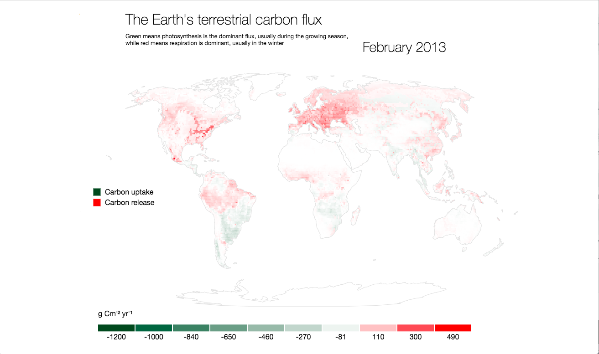

<!DOCTYPE html>
<meta charset="utf-8">

<style>

.graphic canvas, .graphic svg{
  position: absolute;
  top: 0px;
  left: 0px;
}
body {
  font-family: "Helvetica Neue", Helvetica, sans-serif;
  margin: 1em auto 4em auto;
  position: relative;
  tab-size: 2;
  width: 960px;
}

.h1 {
  font-size: 2rem;
  font-weight: 300;
  padding-bottom: 20px;
}

h2 {
  font-size: 1.5rem;
  font-weight: 300;
}

h1, h2 {
  text-rendering: optimizeLegibility;
}
.h2 {
  /*font-size: 2rem;*/
  font-weight: 300;
  padding-bottom: 20px;
}

.subtex, .p{
	font-size: .8rem;
}
     .avg {
        stroke: red;
        fill: red;
     }

     .record {
        stroke: #00441b;
        fill: #00441b;
     }
/*.globe {
  fill: #ccc;
  stroke: #fff;
}*/
</style>
<body>
	 <!-- <h1>The Terrestrial Carbon flux</h1> -->
	<div id='graphic-0' class='graphic'>
         <!--   -->
 
  </div>

	<script src="https://d3js.org/d3.v4.min.js"></script>

<script src="https://d3js.org/d3-geo-projection.v2.min.js"></script>
<!-- <script src="https://d3js.org/d3-geo.v1.min.js"></script>

<script src="https://d3js.org/d3-selection.v1.min.js"></script>

<script src="https://d3js.org/d3-collection.v1.min.js"></script>
<script src="https://d3js.org/d3-dispatch.v1.min.js"></script>
<script src="https://d3js.org/d3-request.v1.min.js"></script> -->

<script src="https://d3js.org/topojson.v1.min.js"></script>
<script src="https://cdnjs.cloudflare.com/ajax/libs/d3-legend/2.24.0/d3-legend.min.js"></script>
<script src="jetpack.js"></script>
<script src="main.js"></script>
<script src="underscore-min.js"></script>

<!-- <a href="https://twitter.com/bluebeardata?ref_src=twsrc%5Etfw" class="twitter-follow-button" data-show-count="false">Follow @bluebeardata</a><script async src="//platform.twitter.com/widgets.js" charset="utf-8"></script> -->